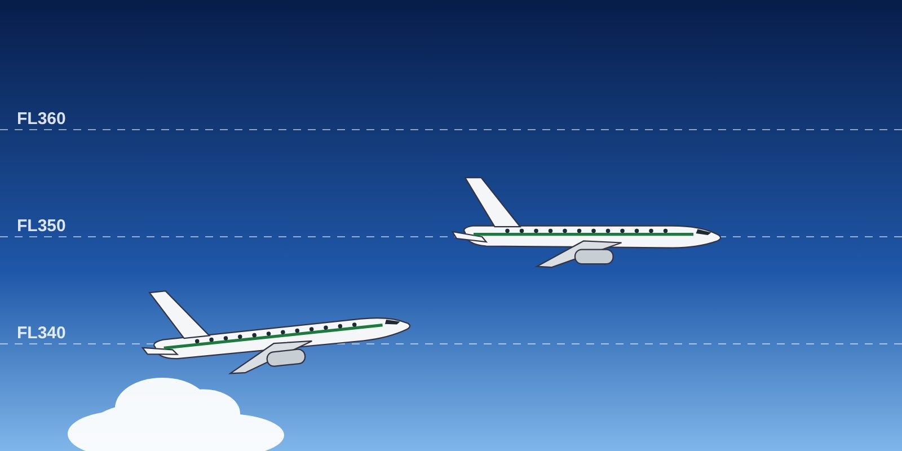

Lesson 05: TCAS / ACAS II in RVSM Airspace
Learning objectives
- Describe the ACAS II version 7.1 changes.
- Apply procedures that avoid nuisance resolution advisories at adjacent levels.
- Respond correctly to a resolution advisory.

ACAS II version 7.1
ACAS II (TCAS II) version 7.1 is the standard required by ICAO and EASA, replacing version 7.0. The main operational change for crews:
- The “ADJUST VERTICAL SPEED, ADJUST” resolution advisory has been replaced by “LEVEL OFF, LEVEL OFF”, which always requires the vertical rate to be reduced to 0 ft/min.
- The reversal logic has been improved, so that an RA can reverse when the other aircraft does not follow its own RA.
Operate TCAS in TA/RA mode during RVSM operations, including in the transition areas.
Avoiding nuisance RAs at adjacent levels
With only 1,000 ft between aircraft, a high vertical rate close to the cleared level can trigger an RA in an aircraft at the adjacent level. ICAO procedures therefore recommend that when a pilot is aware of traffic at an adjacent level (for example from the traffic display), the aircraft climbs or descends at less than 1,500 ft/min throughout the last 1,000 ft before the assigned level — especially with the autopilot engaged.
Responding to an RA
- Follow the RA promptly and accurately, even if it conflicts with an ATC clearance or instruction. Never manoeuvre in the opposite sense to an RA.
- Tell ATC as soon as possible: “(call sign), TCAS RA.”
- When clear: “(call sign), clear of conflict, returning to (assigned clearance)” — then return promptly to the clearance.
- File the company report after any RA.
A TCAS RA takes precedence over ATC instructions. Following an ATC instruction against an RA has caused mid-air collisions.
Key takeaways
- ACAS II v7.1: “LEVEL OFF, LEVEL OFF” replaces “ADJUST VERTICAL SPEED”; improved reversal logic.
- TA/RA mode in RVSM airspace.
- Less than 1,500 ft/min in the last 1,000 ft when traffic is at an adjacent level.
- Always follow the RA, then inform ATC.
Knowledge check
What does the ACAS II 7.1 resolution advisory “LEVEL OFF, LEVEL OFF” require?